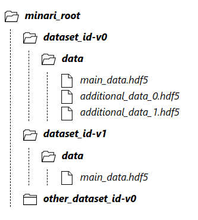

%%capture
%load_ext autoreload
%autoreload 2
%matplotlib inline
%set_random_seed 12
---------------------------------------------------------------------------
ModuleNotFoundError Traceback (most recent call last)
Cell In[1], line 3
1 get_ipython().run_line_magic('load_ext', 'autoreload')
2 get_ipython().run_line_magic('autoreload', '2')
----> 3 get_ipython().run_line_magic('matplotlib', 'inline')
4 get_ipython().run_line_magic('set_random_seed', '12')
File /opt/conda/lib/python3.11/site-packages/IPython/core/interactiveshell.py:2432, in InteractiveShell.run_line_magic(self, magic_name, line, _stack_depth)
2430 kwargs['local_ns'] = self.get_local_scope(stack_depth)
2431 with self.builtin_trap:
-> 2432 result = fn(*args, **kwargs)
2434 # The code below prevents the output from being displayed
2435 # when using magics with decorator @output_can_be_silenced
2436 # when the last Python token in the expression is a ';'.
2437 if getattr(fn, magic.MAGIC_OUTPUT_CAN_BE_SILENCED, False):
File /opt/conda/lib/python3.11/site-packages/IPython/core/magics/pylab.py:99, in PylabMagics.matplotlib(self, line)
97 print("Available matplotlib backends: %s" % backends_list)
98 else:
---> 99 gui, backend = self.shell.enable_matplotlib(args.gui.lower() if isinstance(args.gui, str) else args.gui)
100 self._show_matplotlib_backend(args.gui, backend)
File /opt/conda/lib/python3.11/site-packages/IPython/core/interactiveshell.py:3606, in InteractiveShell.enable_matplotlib(self, gui)
3585 def enable_matplotlib(self, gui=None):
3586 """Enable interactive matplotlib and inline figure support.
3587
3588 This takes the following steps:
(...)
3604 display figures inline.
3605 """
-> 3606 from matplotlib_inline.backend_inline import configure_inline_support
3608 from IPython.core import pylabtools as pt
3609 gui, backend = pt.find_gui_and_backend(gui, self.pylab_gui_select)
File /opt/conda/lib/python3.11/site-packages/matplotlib_inline/__init__.py:1
----> 1 from . import backend_inline, config # noqa
2 __version__ = "0.1.6" # noqa
File /opt/conda/lib/python3.11/site-packages/matplotlib_inline/backend_inline.py:6
1 """A matplotlib backend for publishing figures via display_data"""
3 # Copyright (c) IPython Development Team.
4 # Distributed under the terms of the BSD 3-Clause License.
----> 6 import matplotlib
7 from matplotlib import colors
8 from matplotlib.backends import backend_agg
ModuleNotFoundError: No module named 'matplotlib'
Open Source Datasets libraries for offline RL#
The goal of offline RL or imitation learning is to learn a policy from a fixed dataset. This approach has gained significant attention because it allows RL methods to utilize vast, pre-collected datasets, somewhat similar to how large datasets have propelled advances in supervised learning.
Data collection from sensors or cameras is now easy in many areas like robotics, automotive, and manufacturing. We need a standard way to organize and process this data, including custom data from real machines or simulations. Before, offline RL didn’t have a standard method. New algorithms needed a lot of data preprocessing, especially with large datasets, which was costly.
The MINARI library was made to handle offline RL data tasks efficiently. It also offers a diverse collection of datasets
MINARI Dataset#
(previously called D4RL from UC Berkeley/Google Brain)
Minari is becoming the standard choice, replacing D4RL in the community. Its main goal is to standardize data handling and offer open-source datasets tailored for offline RL.
These datasets match real-world needs and are crucial for testing and improving offline algorithms. Minari provides datasets with random, medium, and expert policies in various environments, helping us evaluate whether an algorithm can extract meaning from noise.
These datasets can be used for benchmarking, as existing benchmarks for online RL are not suitable for offline RL, as we’ll discuss later.
In particular the provided datasets focus mainly on the following properties that appear often in realistic situations:
1 - Narrow and biased data distributions: e.g. from deterministic policies: Narrow datasets may arise in human demonstrations or in hand-crafted policies. (not an issue in online RL)
2 - Undirected and multitask data: refers to data collected without a specific task in mind, such as Internet user interactions or videos for autonomous driving. Although gathered without a clear scope, this data is intended for solving specific tasks. Offline RL aims to identify and use the most rewarding paths within this data.
The main purpose is to test how well the offline agent can be used for “trajectory stitching,” which involves combining trajectories from different tasks to achieve new objectives, rather than searching for out-of-distribution trajectories.
As seen in the figure, suppose we have collected data from our car only for paths 1-2 (green) and 2-3 (yellow); we should be able to use this data to teach our car to go from 1-3. (not an issue in online RL)
3 - Sparse rewards: pose challenges in online setups because they are closely tied to exploration. In offline RL, we explore only within the dataset, making it perfect for studying how algorithms handle sparse rewards. Crafting effective rewards can be difficult, and overly complex rewards may lead to suboptimal results. On the other hand, sparse rewards are often easier to design since they just define the task’s success criteria, making them attractive to work with
4 - Suboptimal data: Give a clear task the data could not contain any optimal trajectory so this is a realistic scenario in general and still the offline agent should be able to find the best trajectory within the data.
5 - Non-representable behavior policies: non-Markovian behavior policies, and partial observability. For instance, if the data is collected with a classical control algorithm that have access to a window of previous states. (not an issue in online RL)
6 - Realistic domains: Different Mujoco tasks as robot manipulation or multi-tasking.
Suggestion: give a look to Minari and in particular to the provided datasets ti get familiar with the library.
Useful minari methods#
DataCollector (gymnasium.Wrapper) class: Collects data \({state_i, action_i, reward_i, termination_i, truncation_i, info_i, i=1,..,H}\) through a Gymnasium environment by performing rollouts of \(\pi_b(a|s)\), similar to what we did in the online RL section.
DataCollector.create_dataset(…): Saves the dataset to storage.
minari.create_dataset_from_buffer(…): Converts historical data to Minari format. Requires to preprocess your data as explained in the Minari documentation.
minari.load_dataset(…)/minari.list_local_datasets(): Loads/lists Minari GCP registered datasets.
minari.combine_datasets(…): Merges two Minari datasets into one.
Minari also includes other functionalities, such as splitting datasets or saving metadata.
Minari dataset structure#
Here is the typical Minari dataset folder structure:
And this is how the data is saved in the .hdf5 file:
HDF5 is an open-source file format for large, complex data. It uses a file directory structure, compresses data for smaller file sizes, and allows data slicing to process subsets without loading everything into memory.
Minari stores datasets in HDF5 format using h5py. HDF5 organizes data into groups and datasets, supports data slicing, and allows custom meta
RL Unplugged dataset#
(Deep Mind - Google Brain) github and blog
The tasks are diverse, but the key point is that most datasets are based on behavior policies trained online. This means the data might not accurately represent real-world scenarios where human experts and non-RL policies are common. Also, the majority of data comes from medium to expert policies. While not perfect, these datasets are valuable for benchmarking algorithms.
Open X-Embodiment Repository#
October 2023 - Partners from 33 academic labs.
link to short video
This library introduced the Open X-Embodiment Repository that includes a dataset with 22 different robot types for X-embodiment learning, i.e. to learn from diverse and large-scale datasets from multiple robots for better transfer learning and improved generalization.
GROOT Nvidia humanoid project: link
References#
[Fu.Justin et. al. ‘2021 ] D4RL: Datasets for Deep Data-Driven Reinforcement Learning
MINARI: A dataset API for Offline Reinforcement Learning
C. Gulcehre et al. ‘2021, “RL unplugged: A suite of benchmarks for offline reinforcement learning
A. Padalkar et. al. ‘2023 Open X-Embodiment: Robotic Learning Datasets and RT-X Models